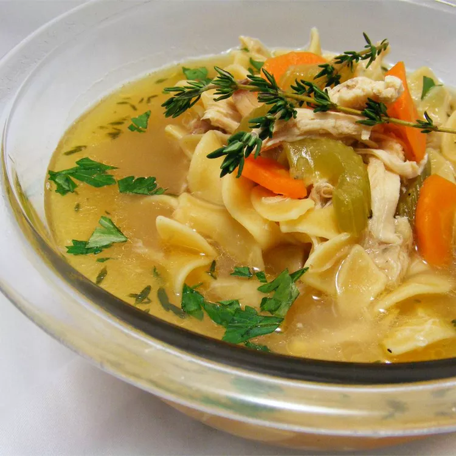

Chicken Soup Baser
Back To Recipes

How To Make
This recipe will go over on how to make Chicken Soup Base. This recipe is from scratch and fast!
Prep Time:
5
Cook Time:
45
Total Time:
50
Ingredients
- 2 quarts chicken broth
- 1 quart water
- 1 store-bought roast chicken
- 3 tablespoons vegetable oil
- 2 large onions, cut into medium dice
- 2 large carrots, peeled and cut into rounds or half rounds, depending on size
- 2 large stalks celery, sliced 1/4 inch thick
- 1 teaspoon dried thyme leaves
Steps
- Bring broth and water to a simmer over medium-high heat in a large soup kettle. Meanwhile, separate chicken
meat from skin and bones; reserve meat. Add skin and bones to the simmering broth. Reduce heat to low,
partially cover and simmer until bones release their flavor, 20 to 30 minutes.
- Strain broth through a colander into a large container; reserve broth and discard skin and bones. Return
kettle to burner set on medium-high.
- Add oil, then onions, carrots and celery. Saute until soft, about 8 to 10 minutes. Add chicken, broth and
thyme. Bring to a simmer. (Can be refrigerated up to 3 days in advance. Return to a simmer before adding the
extras of your choice.)